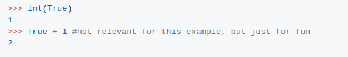

설명:
https://docs.python.org/2/reference/expressions.html#not-in에 따르면
위의 예에서 그러한 행동은 어리석게 보일 수도 있지만, a == b == c와0 <= x <= 100과 같은 것들을 보면 환상적이다.
위의 예에서 그러한 행동은 어리석게 보일 수도 있지만, a == b == c와0 <= x <= 100과 같은 것들을 보면 환상적이다.
False is Falseis False는 (False is False),(False is False)와 동일 의미다.
참은 거짓이고 거짓은 거짓이다. 진술의 첫 번째 부분(참은 거짓)은 거짓으로 평가되므로 전체적인 표현은 거짓으로 평가된다.
1 > 0 < 1은 1 > 0과 0 > 1과 같으며, 이는 참으로 평가된다.
식(1 > 0) < 1은 참 < 1과 같다.
